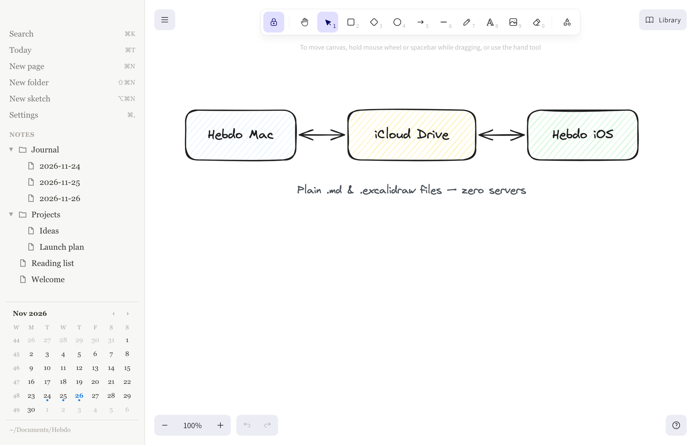
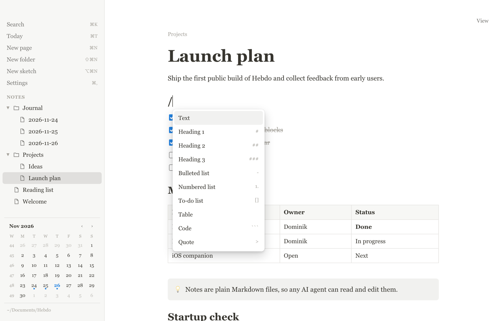
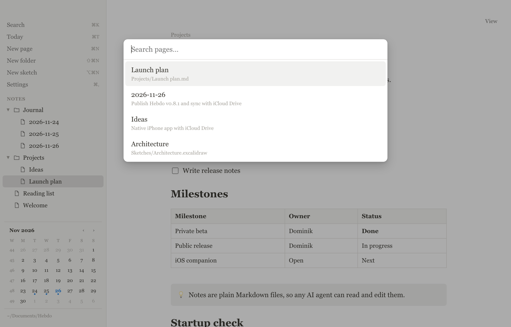
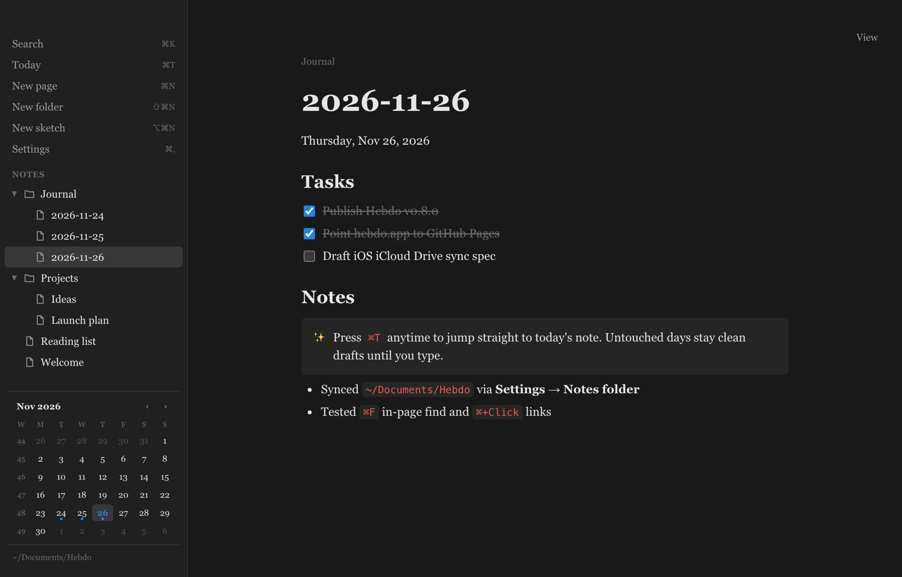
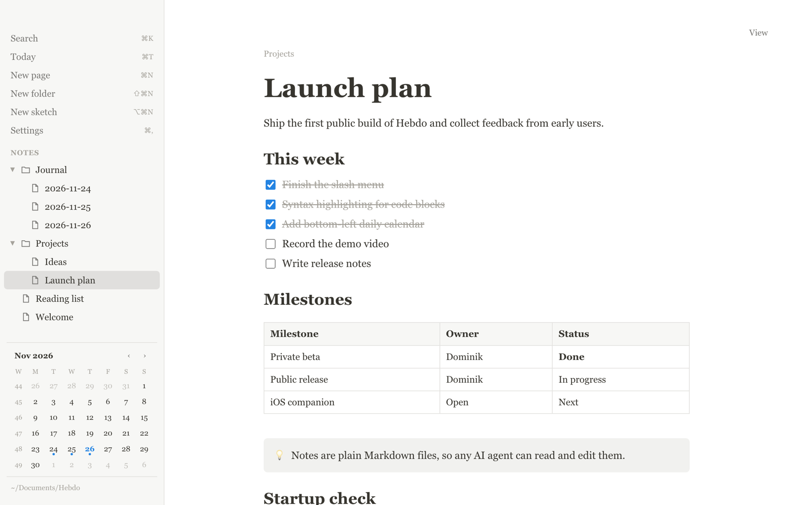

A 7 MB open source note-taking app for macOS & iOS, built with Rust, Tauri, and SwiftUI.
Every note is a plain .md file synced automatically over iCloud Drive.
curl -fsSL https://hebdo.app/install.sh | bash
Signed & notarized for macOS 11+ · Download .dmg · Source & iOS app on GitHub




Rust backend, plain JavaScript editor, native macOS WebKit. No bundled Chromium, no Electron overhead.
Every page is GitHub-flavored Markdown on disk. Sync automatically via iCloud Drive, or pick any folder in Settings.
A fast SwiftUI app for iPhone & iPad sharing your iCloud Drive / Hebdo folder — same live block editor, zero logins.
Point Claude Code, Codex, or Cursor at your notes folder. Hebdo reloads external edits within 2 seconds without losing your place.
Sketch diagrams and brainstorm with Excalidraw, saved as standard .excalidraw files and lazy-loaded only when needed.
A compact mini-calendar sits in the bottom-left with week numbers and ⌘T quick jump. Untouched days stay clean drafts until you type.
Slash menu, Markdown shortcuts as you type, ⌘K global search, ⌘F find in page, and ⇧⌘F present mode.
Link any folder from disk right into your sidebar without moving files, and export any note as a clean light-mode PDF with ⇧⌘E.
Atomic saves prevent corruption, and automatic 10-minute snapshots let you restore older versions anytime — completely offline.
